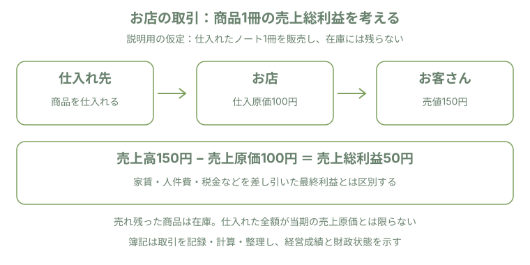

お店の取引とは？簿記とは？
【ゼロからの簿記 第1回】
こんにちは、若葉です！
実を言うと、私も高校生の頃に父の確定申告の書類をこっそり覗いたとき、借方・貸方やら見慣れない数字がびっしり並んでいて「うわっ、なんじゃこりゃ…！」と本気で目を逸らした過去があります（笑）。でも簿記の正体は拍子抜けするくらいシンプルで、「お店のお金がどう動いて、どこで儲けが生まれるか」を解き明かすだけのお金のパズルなんです。
この連載『ゼロからの簿記』では、そのパズルのピースを専門用語ゼロで1つずつ一緒に埋めていきます。全5回、私と一緒に最後まで走り切りましょう！
この記事で整理した内容から、次の学習で確認することを1つ選び、記録に残してみてください。
- 第1回「お店の取引とは？」「簿記とは？」← 今ここ
- 第2回「なぜ簿記が大事といわれるか？」
- 第3回「簿記の流れ」
- 第4回「仕訳のしくみ」
- 第5回「仕訳から財務諸表へ」
お店の取引とは？
お店や会社の基本的な動きを考えてみましょう。たとえば文具屋さんなら、仕入れ先からノートを100円で仕入れて、150円でお客さんに売ります。

説明用の仮定：100円で仕入れたノート1冊を150円で販売し、そのノートは在庫に残りません。売上高150円−売上原価100円＝売上総利益50円。家賃・人件費・税金などを差し引いた最終利益とは区別します。
この「商品を買う」「商品を売る」「代金を受け取る」「代金を払う」といったお金や物のやりとりのことを、簿記では取引（とりひき）と呼びます。
「取引」という言葉は日常会話でも使いますが、簿記の「取引」は「お金や財産が動く出来事」という意味です。引越しの挨拶をするのは簿記的には取引ではありません。
簿記の「取引」は、日常会話で使う「取引先」の「取引」とは少しニュアンスが違います。簿記でいう取引とは、「財産やお金が増えたり減ったりする出来事」のことです。たとえば火事で商品が燃えてしまった場合も、財産が減っているので簿記上は立派な「取引」として記録します。最初は私もこの感覚に驚きましたが、「取引＝財産の変動」とシンプルに覚えておくと、この先の勉強がぐっと楽になりますよ。
簿記とは？
では、取引をそのまま放置しておくとどうなるでしょう。1日に何十件も売り買いをするお店では、「今日いくら売れたのか」「今いくら現金があるのか」がすぐにわからなくなります。
たとえばレジ締めで現金が合わないとき、売上や支払いをその都度記録していなければ、どこで差が生じたのかを後から探すことになります。小さな入力漏れでも、伝票やレシートを一つずつ確認する作業につながります。お金の動きを決まったルールで記録しておけば、何が起きたかをたどりやすくなる——これが簿記という仕組みが必要とされる理由です。
簿記とは「お店・会社の取引を記録・計算・整理し、経営成績と財政状態を明らかにすること」
取引を一定の方法で記録し、計算・整理すると、期間の損益や、ある時点の財産・債務を確認できます。将来の資金繰りを判断するには、記録に加えて入金・支払の予定も必要です。
出典：日本商工会議所「簿記とは」（2026年10月31日確認）。
記録なし → いくら儲かったかわからない
簿記で記録 → 利益・資産・借金が一目でわかる
簿記は「お店の家計簿」
わかりやすく言えば、簿記は「お店の家計簿」です。家計簿が「今月食費がいくらかかったか」を教えてくれるように、簿記は「今月の売上・費用・利益」を教えてくれます。
ただし家計簿と違うのは、ルールが決まっているという点です。銀行・税務署・投資家などへ説明するためにも、適用する会計基準や制度に沿って記録を整理します。後で学ぶ「仕訳」は、取引を借方・貸方の勘定科目と金額に分けて記録する手続きです。会計基準そのものの名前ではありません。
「自分だけがわかればいいなら、家計簿で十分では？」と思うかもしれません。実際、個人のお金の管理ならそれで問題ありません。お店や会社の記録では、複式簿記の基本を学びます。ただし、日本基準やIFRSなどがあり、会計処理や制度が世界中で一律という意味ではありません。日商簿記は対象年度の出題範囲・基準で学びます。
出典：日本取引所グループ「IFRSとは」、日本商工会議所「出題区分表」（2026年10月31日確認）。仕訳の基本は東京商工会議所の記帳資料も参照しています。
第1回のまとめ
- 取引＝お店・会社の財産やお金が動く出来事
- 簿記＝取引を決まったルールで記録すること
- 記録があれば「いくら儲かったか」「いくら残っているか」が一目でわかる
- 複式簿記の基本と、対象年度に適用する会計基準・制度を区別する
第2回では「なぜ簿記が社会人みんなに役立つのか」を解説します。資格取得だけでなく、日常生活・就活・仕事でどう使えるかを若葉の実体験も交えてお伝えします。
- 第1回「お店の取引とは？」「簿記とは？」← 今ここ
- 第2回「なぜ簿記が大事といわれるか？」
- 第3回「簿記の流れ」
- 第4回「仕訳のしくみ」
- 第5回「仕訳から財務諸表へ」